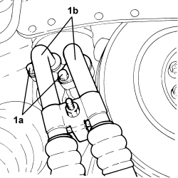
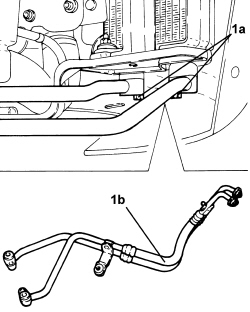

1084C38 ENGINE OIL DELIVERY AND RETURN PIPES TO COOLING RADIATOR - R + R
- Path
- Procedures > 10 ENGINE > 1084 ENGINE LUBRICATION > 1084C ENGINE OIL COOLING CIRCUIT > 1084C38 ENGINE OIL DELIVERY AND RETURN PIPES TO COOLING RADIATOR - R + R
- Kind
- repair procedure (removal / refitting; the operation number is the code)
- Applies to
- engines: 2.4 JTD 20v; all production periods
- Interactive page
- https://sloeber94.github.io/elrnDB-fCrm/en/#/194003999
Applies to: engines: 2.4 JTD 20v; all production periods
 Removing
Removing
 Refitting
Refitting- Position the vehicle on a lift.
Op. 7055B54 UNDER ENGINE PROTECTION/GUARD - R.R.
Op. 4450B04 RIGHT FRONT WHEEL - R.R
Op. 7055B66 ENGINE COMPARTMENT DUST COVER IN RIGHT FRONT WHEEL ARCH - R.R.
Op. 7055B91 RIGHT FRONT WHEEL ARCH LINER - R.R.
1. Undo the bolts (1a) and disconnect the engine oil supply/return pipe to the cooling radiator (1b), engine oil filter mounting side.

Applies to: engines: 2.4 JTD 20v; all production periods
1. Undo the bolts (1a) and disconnect the engine oil supply/return pipe to the cooling radiator (1b), radiator side and remove

Applies to: engines: 2.4 JTD 20v; all production periods
Refitting
Removing- Replace the o-rings on the fittings of the engine oil delivery and return pipes to the cooling radiator.
- Refit the engine oil delivery and return pipes to the cooling radiator, connect them to the radiator and secure by tightening the bolts to the specified torque.
Component | Fastening | dia | Value (daNm) | Validity |
|---|---|---|---|---|
Engine oil radiator supply and return pipes | Connector | M22 | (radiator side) 4.0 - 4.5 | 2.4 JTD 20v |
- Connect the engine oil supply/return pipes to the cooling radiator, engine oil filter mounting side and tighten the bolts to the specified torque.
Component | Fastening | dia | Value (daNm) | Validity |
|---|---|---|---|---|
Engine oil radiator supply and return pipes | Connector | M22 | (oil filter mounting side) 4.0 - 4.5 | 2.4 JTD 20v |
Op. 7055B91 RIGHT FRONT WHEEL ARCH LINER - R.R.
Op. 7055B66 ENGINE COMPARTMENT DUST COVER IN RIGHT FRONT WHEEL ARCH - R.R.
Op. 4450B04 RIGHT FRONT WHEEL - R.R
Op. 0010T11 ENGINE OIL - CHECK LEVEL AND TOP UP, IF NECESSARY
Op. 7055B54 UNDER ENGINE PROTECTION/GUARD - R.R.
- Remove the vehicle from the lift.